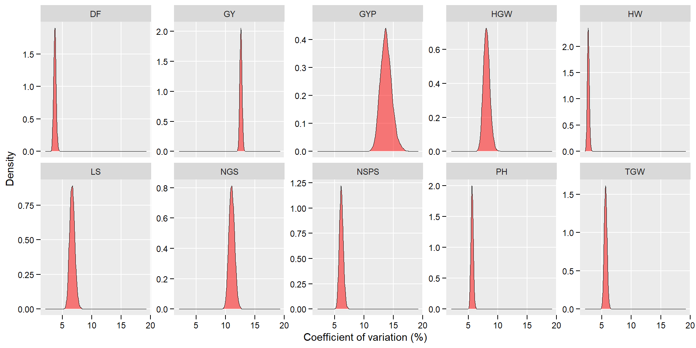
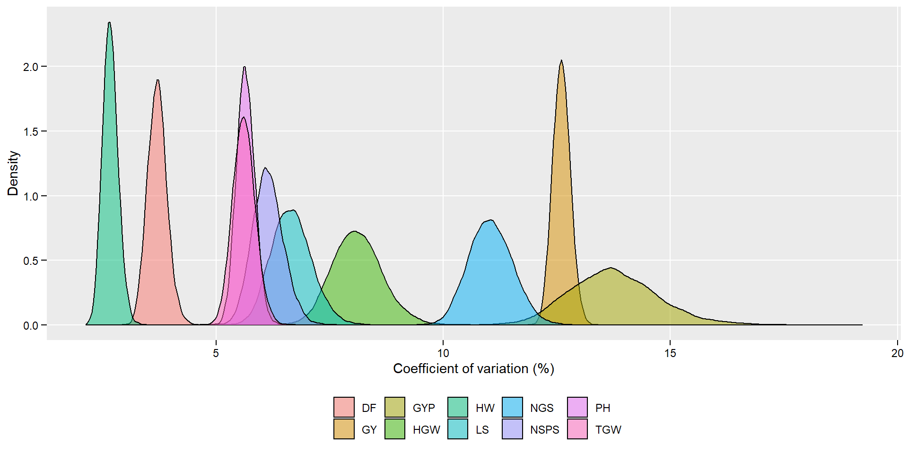
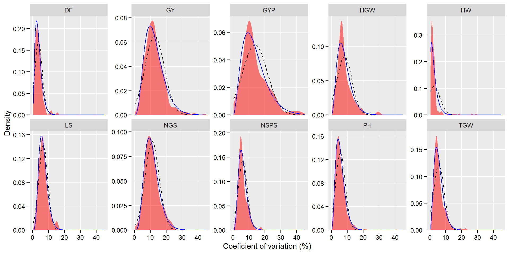
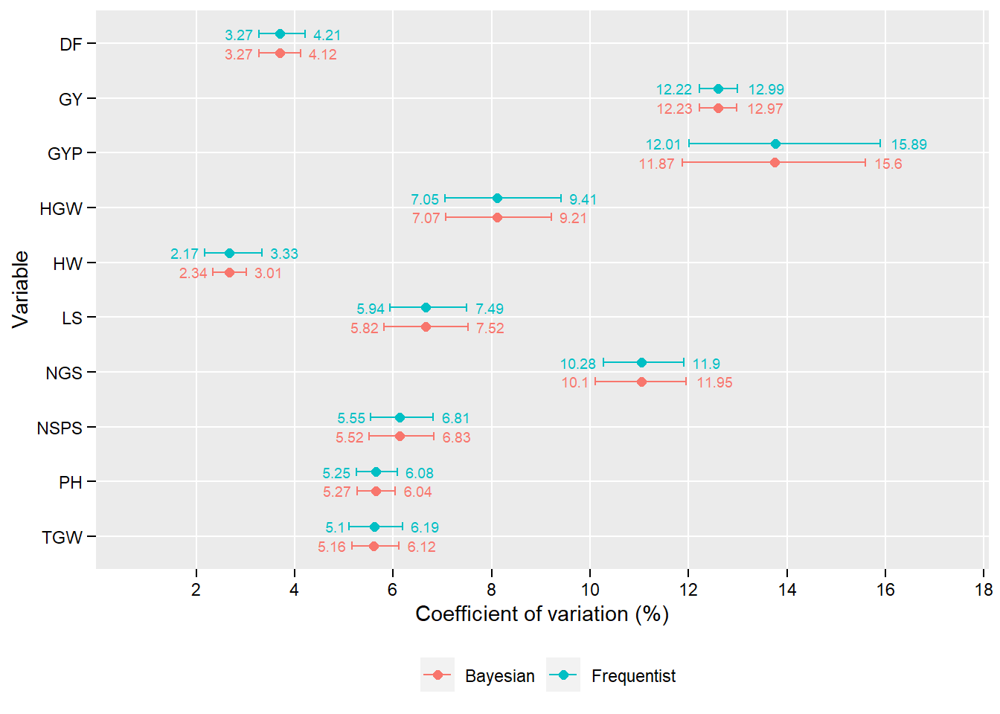

library(tidyverse)
library(metan)
library(rio)
library(ggrepel)
library(R2OpenBUGS)
library(boa)
library(ggformula)To perform the bayesian analysis, the Open BUGS software need to be installed. Follow these instructions to install it.
data_cv <-
import("http://bit.ly/data_cvs") %>%
select(GY:NGS)
# Long format
data_cv_long <-
data_cv %>%
pivot_longer(everything(),
names_to = "var",
values_to = "cv") %>%
remove_rows_na()
# samples per variable
data_cv_long %>% n_by(var)
# create a list of variables with no missing values
df <- lapply(data_cv, remove_rows_na)bayes <- function(df){
linemodel <- function(){
for (i in 1:64) # change the number of samples for each variable
{
y[i] ~ dgamma(r, mu)
}
r ~ dunif(0,5)
mu ~ dunif(0,5)
}
################ Especificando os dados
linedata <- list(y = df[[1]])
###################### Specification innitial values
lineinits <- function(){list(r = 0.5, mu = 1) }
#Specification the parameters
parameters <- c("r","mu")
############# Execution function analysis with bugs package of R2OpenBUGS
Niter <- 10000
Nburn <- 1000
Nthin <- 10
################ results of descriptive statistics #############
modelo <- bugs(data = linedata,
inits = lineinits,
parameters.to.save = parameters,
model.file = linemodel,
n.chains = 1,
n.iter = Niter,
n.burnin = Nburn,
n.thin = Nthin,
debug = TRUE)
return(modelo$sims.matrix[,1] / modelo$sims.matrix[,2])
}GY <- bayes(df$GY)
GYP <- bayes(df$GYP)
HGW <- bayes(df$HGW)
TGW <- bayes(df$TGW)
HW <- bayes(df$HW)
DF <- bayes(df$DF)
PH <- bayes(df$PH)
LS <- bayes(df$LS)
NSPS <- bayes(df$NSps)
NGS <- bayes(df$NGS)posterior <- import("http://bit.ly/data_posterior")
conf_int_bayes <-
sapply(posterior,
function(x){
conf_int <- boa.hpd(x, 0.05)
data.frame(LCI = conf_int[[1]],
MEAN = mean(x),
UCI = conf_int[[2]])
}) %>%
t()posterior_long <- posterior %>% pivot_longer(everything())
ggplot(posterior_long, aes(value))+
geom_density(fill = "red", alpha = 0.5, size = 0.1) +
theme(panel.grid.minor = element_blank(),
legend.position = "bottom",
legend.title = element_blank(),
axis.text = element_text(color = "black"),
axis.ticks = element_line(color = "black"),
axis.ticks.length = unit(0.15, "cm")) +
facet_wrap(~ name, scales = "free_y", ncol = 5) +
theme(panel.grid.minor = element_blank(),
legend.position = "bottom",
legend.title = element_blank(),
axis.text = element_text(color = "black"),
axis.ticks = element_line(color = "black"),
axis.ticks.length = unit(0.15, "cm")) +
labs(x = "Coefficient of variation (%)",
y = "Density")
ggsave("figs/fig1_posterior.jpg", dpi = 600, width = 25, height = 10, units = "cm")
# An alternative plot
ggplot(posterior_long, aes(value))+
geom_density(aes(fill = name),
alpha = 0.5) +
theme(panel.grid.minor = element_blank(),
legend.position = "bottom",
legend.title = element_blank(),
axis.text = element_text(color = "black"),
axis.ticks = element_line(color = "black"),
axis.ticks.length = unit(0.15, "cm")) +
theme(panel.grid.minor = element_blank(),
legend.position = "bottom",
legend.title = element_blank(),
axis.text = element_text(color = "black"),
axis.ticks = element_line(color = "black"),
axis.ticks.length = unit(0.15, "cm")) +
labs(x = "Coefficient of variation (%)",
y = "Density")
ggsave("figs/fig1_posterior2.jpg", dpi = 600, width = 25, height = 10, units = "cm")
get_confint <- function(df, var){
if(is.grouped_df(df)){
results <- doo(df, get_confint, var = {{var}})
return(results)
}
values <- na.omit(df %>% select_cols({{var}}) %>% pull())
model <- glm(values ~ 1, family = Gamma(link = "identity"))
conf <- confint(model)
MEAN <- coef(model)[[1]]
LCI <- conf[[1]]
UCI <- conf[[2]]
data.frame(LCI = LCI, MEAN = MEAN, UCI = UCI)
}
freq_lim <-
data_cv_long %>%
group_by(var) %>%
get_confint(cv)p <-
gf_density( ~ cv | var,
data = data_cv_long,
fill = "red",
alpha = 0.5) %>%
gf_fitdistr(linetype = 2) %>%
gf_fitdistr(dist = "gamma", color = "blue")
p +
facet_wrap(~var, nrow = 2, scales = "free_y") +
theme(panel.grid.minor = element_blank(),
axis.text = element_text(color = "black"),
axis.ticks = element_line(color = "black"),
axis.ticks.length = unit(0.15, "cm")) +
scale_y_continuous(expand = expansion(c(0, 0.05))) +
labs(x = "Coeficient of variation (%)",
y = "Density")
ggsave("figs/fig2_density.jpg", dpi = 600, width = 25, height = 10, units = "cm")
df_confint <- import("http://bit.ly/data_confint")
ggplot(df_confint, aes(MEAN, fct_rev(VAR), color = APPROACH)) +
geom_point(position = position_dodge(width = 0.7),
size = 2) +
geom_errorbarh(aes(xmin = LCI, xmax = UCI),
position = position_dodge(width = 0.7),
width = 0.3) +
scale_x_continuous(breaks = seq(2, 19, by = 2),
expand = c(0.15, 0.15)) +
theme(panel.grid.minor = element_blank(),
legend.position = "bottom",
legend.title = element_blank(),
axis.text = element_text(color = "black"),
axis.title = element_text(color = "black"),
axis.ticks = element_line(color = "black"),
axis.ticks.length = unit(0.15, "cm")) +
labs(x = "Coefficient of variation (%)",
y = "Variable") +
geom_text(aes(label = round(LCI, 2),
x = LCI),
position = position_dodge(width = 0.7),
hjust = 1.2,
size = 2.5,
show.legend = FALSE) +
geom_text(aes(label = round(UCI, 2),
x = UCI),
position = position_dodge(width = 0.7),
hjust = -0.3,
size = 2.5,
show.legend = FALSE)
ggsave("figs/fig3_confidence.jpg", dpi = 600, width = 10, height = 12, units = "cm")